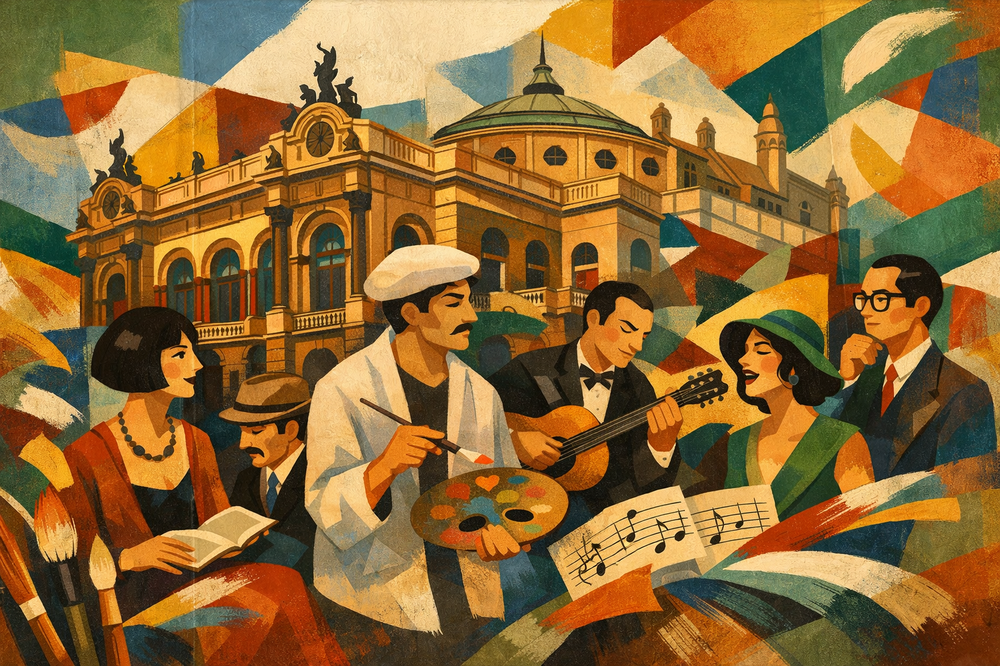

Semana de Arte Moderna: o que foi, contexto histórico, artistas e importância para a cultura brasileira
A Semana de Arte Moderna foi um dos acontecimentos mais importantes da história cultural do Brasil. Realizada em fevereiro de 1922, no Theatro Municipal de São Paulo, o evento marcou oficialmente o início do Modernismo brasileiro, rompendo com os padrões artísticos tradicionais e propondo uma nova forma de pensar a arte, a literatura e a identidade nacional.
Contexto histórico da Semana de Arte Moderna
No início do século XX, o Brasil vivia um período de intensas transformações sociais, econômicas e culturais. A urbanização acelerada, o crescimento industrial e o impacto das vanguardas europeias influenciavam diretamente os artistas brasileiros. No entanto, a produção artística nacional ainda seguia modelos acadêmicos rígidos, inspirados principalmente na arte europeia clássica.
A realização da Semana de Arte Moderna coincidiu com o centenário da Independência do Brasil, o que reforçou o desejo de construir uma arte verdadeiramente brasileira, moderna e autêntica. Os artistas envolvidos buscavam valorizar a cultura nacional, a linguagem cotidiana, o folclore, os costumes populares e a diversidade cultural do país.
O que foi a Semana de Arte Moderna de 1922
A Semana de Arte Moderna ocorreu entre os dias 13 e 18 de fevereiro de 1922 e reuniu exposições de artes plásticas, apresentações musicais, leituras de poemas e palestras. O evento causou grande impacto e polêmica, sendo alvo de críticas, vaias e debates intensos por parte do público e da imprensa da época.
Apesar da resistência inicial, a Semana consolidou novas propostas estéticas e abriu caminho para uma profunda renovação artística no Brasil, influenciando gerações posteriores.
Principais objetivos da Semana de Arte Moderna
- Romper com o academicismo e os padrões artísticos tradicionais
- Introduzir novas linguagens e formas de expressão artística
- Valorizar a cultura, a língua e a identidade brasileiras
- Incorporar influências das vanguardas europeias de forma crítica
- Estimular a liberdade criativa e a experimentação estética
Principais artistas e intelectuais envolvidos
A Semana de Arte Moderna contou com a participação de importantes nomes da arte e da literatura brasileira, que se tornariam referências do Modernismo:
- Mário de Andrade – escritor, poeta e musicólogo
- Oswald de Andrade – escritor e idealizador do movimento antropofágico
- Manuel Bandeira – poeta modernista (representado no evento)
- Anita Malfatti – pintora, símbolo da ruptura estética
- Di Cavalcanti – pintor e ilustrador
- Heitor Villa-Lobos – compositor e maestro
- Victor Brecheret – escultor
Características artísticas da Semana de Arte Moderna
As manifestações apresentadas durante a Semana de Arte Moderna romperam com as normas tradicionais e apresentaram características inovadoras, como:
- Linguagem simples, coloquial e próxima da oralidade
- Liberdade formal e rejeição às regras clássicas
- Experimentação estética e temática
- Crítica social e cultural
- Valorização do cotidiano e da cultura popular brasileira
Repercussão e críticas ao evento
Na época, a Semana de Arte Moderna foi recebida com forte rejeição por parte do público conservador. Muitos artistas foram vaiados e duramente criticados nos jornais. As propostas modernistas foram vistas como estranhas, exageradas e até ofensivas aos padrões culturais vigentes.
Com o passar do tempo, no entanto, o evento passou a ser reconhecido como um marco decisivo na renovação da arte brasileira.
Importância da Semana de Arte Moderna para a cultura brasileira
A Semana de Arte Moderna foi fundamental para a construção de uma identidade cultural brasileira moderna. A partir dela, surgiram diversos movimentos e fases do Modernismo, como o Movimento Antropofágico e o Regionalismo.
Seu legado influenciou não apenas a literatura e as artes visuais, mas também a música, o teatro, o cinema e o pensamento cultural brasileiro como um todo.
Conclusão
A Semana de Arte Moderna de 1922 representou uma ruptura decisiva com o passado artístico tradicional e abriu espaço para uma arte mais livre, crítica e conectada à realidade brasileira. Mesmo enfrentando resistência inicial, o evento se consolidou como um dos marcos mais importantes da história cultural do Brasil, sendo estudado até hoje como símbolo da modernização artística e da busca por identidade nacional.
Explore Outros Conteúdos
Continue seus estudos acessando outras seções do site Mestre Kira: